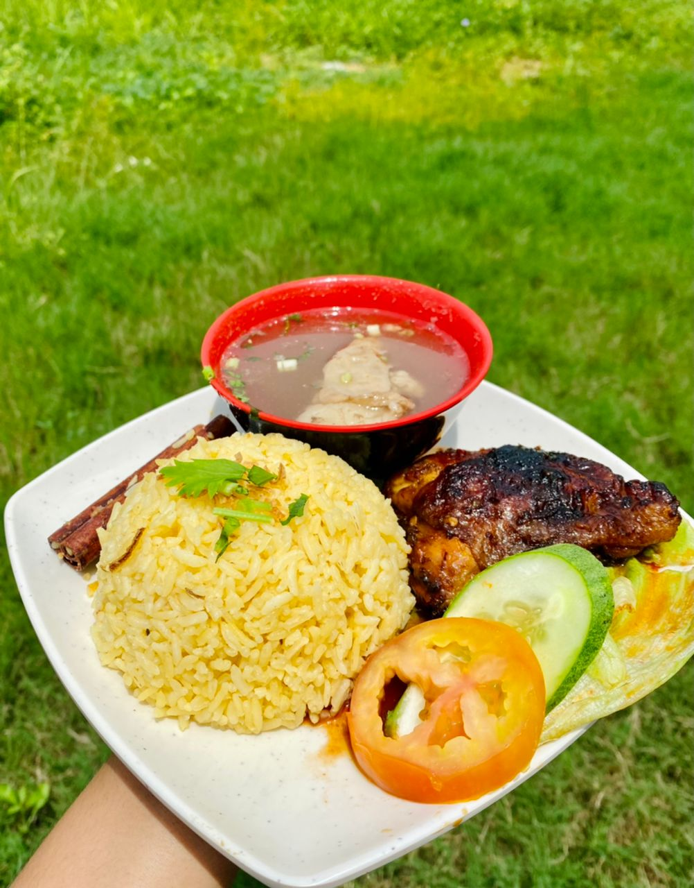
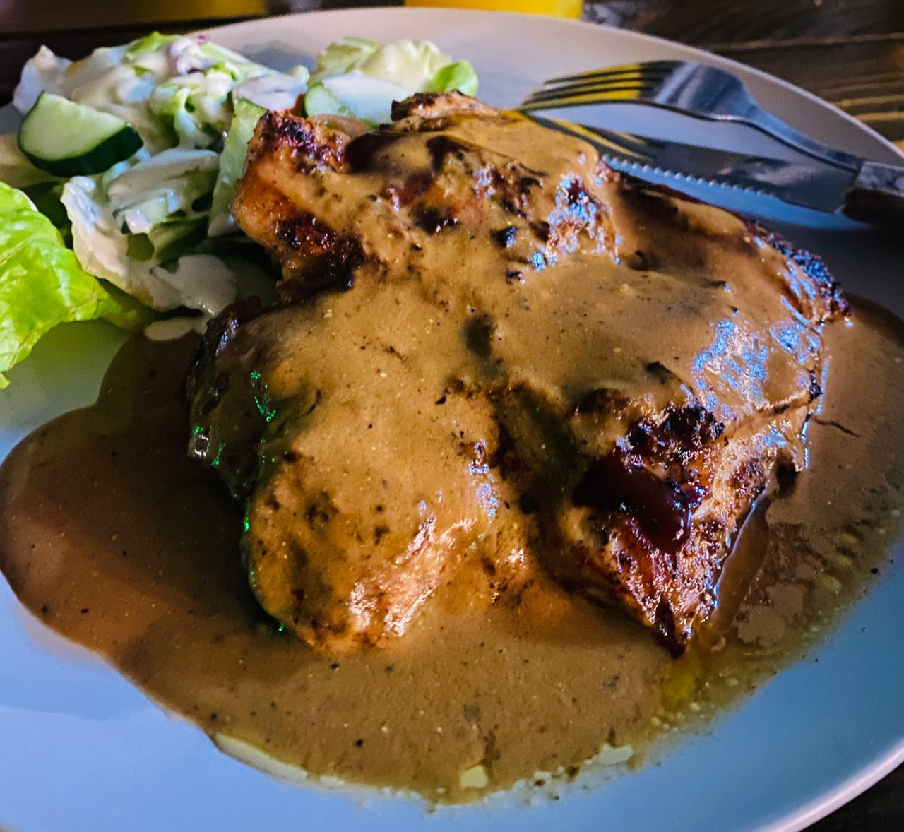

Having a hobby is a great way to reduce the amount of stress you feel-Craig W.Baird-😍
HERE A SHORT VIDEO COOKING FROM ME
Cooking helps me in reducing stress levels. Every time I cook, I enjoy it and I can’t determine how happy I felt at the time. Sometimes I also often share my recipes or cooking videos on social sites.
Hobbies are the things we love to do. They occupy our minds when we are free and also make us happy. We look at, all our hobby are very useful for us. They teach us a lot of things about different stuff. Hobbies are the things what we love to do what we want to do.In today’s fast and competitive world, we often get time for ourselves. In our busy lives, we get time for ourselves just because of our hobbies we laugh we enjoy the time between the stressful life.
If I chose one of my favorite hobbies out of the many I have, I would choose cooking. I love to cook I love to eat new foods from different places or people of different cultures. Especially I love cooking new foods, all kinds of food. In fact I looked on the internet to find video tutorials that would teach me more about cooking. I love making new dishes.
SOME OF MY MENU DISHES

Chicken Rice

Chicken Grill